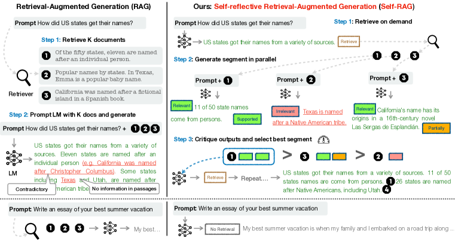

发展脉络
高级 RAG 从单次向量召回发展为查询改写、混合检索、cross-encoder 重排、上下文压缩和多跳检索。
基础 RAG 的流程是「查一次 → 答一次」，但真实问题远比这复杂：用户问「对比 A 公司和 B 公司 2024 年的营收增长率」，需要两次检索、一次计算；问「导致 X 事件的因果链是什么」，需要多跳推理把分散在多份文档中的片段串起来。Advanced RAG 解决的就是「查不准、查不全、查不对」的问题——让检索从一次性动作变成可改写、可迭代、可反思的智能过程。这一节把五条主要路线逐一拆开，并给出何时该用、何时是过度工程的判据。
基础 RAG 是「直线管道」：问题 → 检索 → 生成。Advanced RAG 把这条直线弯成一个循环：问题先被改写和拆解，检索结果会被评估是否够用，不够就重新检索，够了才生成——生成后还能自检是否需要补查。这就像写论文：不是搜一次文献就动笔，而是搜了看、看了再搜、写了再查证。
在钻进具体技法之前，先建立一张地图。业界常把 RAG 的演进分成三代，这个分法不是严格的时间线，而是复杂度阶梯——你完全可以在一个系统里同时用到三代的组件。
| 维度 | Naive RAG | Advanced RAG | Agentic RAG |
|---|---|---|---|
| 控制流 | 写死的直线管道 | 写死的分支与有限循环 | LLM 自主决策 |
| 检索次数 | 恰好 1 次 | 固定上限，如 1–3 次 | 动态，理论无上限，需人为设闸 |
| 延迟可预测性 | 高，几乎恒定 | 中，有上界 | 低，同一类问题可能差 5 倍 |
| 单次成本 | 1 次生成调用 | 2–5 次模型调用 | 5–20 次不等，需预算上限 |
| 能答的问题 | 单点事实查询 | 对比、汇总、有限多跳 | 开放式研究、需要试错的探索 |
| 调试难度 | 低，链路固定 | 中，分支有限可穷举 | 高，每次轨迹都不同，必须有完整 trace |
| 适合场景 | FAQ、文档助手 | 企业知识库问答 | 深度研究、竞品分析、尽调 |
基础 RAG 直接用用户原始问题去检索，但用户的问题往往不是最好的检索 query。用户问「他后来怎么样了」——这个「他」指谁？用户问「帮我对比下这两家」——「这两家」是哪两家？查询改写（Query Rewriting）就是在检索前先把用户问题变成更适合检索的 query。
为什么这一步收益这么大？因为检索是整条链路里唯一「一步错步步错」的环节。生成阶段模型答得不好，你还能换个 Prompt 补救；但检索没捞到正确文档，后面所有环节都在处理垃圾。而用户的自然语言表达和文档的书面表达之间，天然存在一道鸿沟：用户说「网络连不上」，文档标题是「网络连通性故障排除指南」；用户说「多少钱」，文档写「定价策略与费率表」。查询改写就是在这道鸿沟上架桥。
用对话历史把「他」「它」「这两家」等代词替换为具体实体。多轮对话场景必备。
把复杂问题拆成多个独立子问题分别检索。「对比 A 和 B 的营收增长率」→「A 的营收」「B 的营收」「各自的增长率」。
用同义词、上位词或 LLM 生成多个变体 query，并行检索后合并去重，提高召回率。
| 手法 | 解决什么问题 | 额外成本 | 什么时候一定要上 | 反面风险 |
|---|---|---|---|---|
| 指代消解 | 多轮对话里的代词、省略 | 1 次小模型调用 | 只要支持多轮对话，就必须有 | 消解错实体，把问题引向完全错误的方向 |
| 子问题拆解 | 对比、聚合、多条件复合问题 | 1 次调用 + N 路检索 | 评测集里对比类问题成批失败时 | 过度拆解，把简单问题拆成 5 个子问题，延迟暴涨 |
| 同义扩展 | 用户口语与文档术语不匹配 | 1 次调用 + N 路检索 | 用户群体和文档作者不是同一批人时 | 变体太发散，召回一堆无关内容反被噪声淹没 |
| HyDE | 问题与答案的向量形态差异大 | 1 次生成调用（较贵） | 零样本冷启动、无标注数据可调时 | 假答案本身是幻觉，会把检索带偏到虚构方向 |
| Step-back 抽象 | 问题过于具体，库里只有一般性论述 | 1 次小模型调用 | 问题里有大量具体细节但文档偏原理性 | 抽象过头，召回的全是泛泛而谈的内容 |
| 术语归一 | 同一概念的多种叫法 | 近乎为零（查词表） | 有稳定行业术语表时，性价比最高 | 词表过期，把新术语映射到废弃术语 |
HyDE（Hypothetical Document Embedding）是一种特殊的查询改写：先让 LLM 假设性地生成一个答案文档，再用这个假文档的向量去检索。原理是「答案比问题更像答案」——问题「2024 年中国 GDP 增速」和文档「2024 年中国 GDP 同比增长 5%」的向量相似度，可能不如假答案「2024 年中国 GDP 增速约为 5%」和真实文档的相似度高。
回忆一下嵌入模型的训练方式。多数通用嵌入模型是在「相似句子对」上训练的，它学到的是文本形态的相似性而不是「问题—答案」的对应关系。一个疑问句和一个陈述句，即便语义上一问一答严丝合缝，在向量空间里也未必接近——因为它们的句式、语气、长度都不一样。这就是所谓的非对称检索难题。
HyDE 的巧思在于：既然「答案像答案」，那就先造一个假答案，用假答案去找真答案。这一步把非对称检索转化成了对称检索，绕开了嵌入模型的训练目标与使用场景之间的错配。
但它有两个明确的失效场景，都很致命：
所以 HyDE 的最佳场景是通用知识 + 零样本冷启动：模型对领域有基本常识，但你还没有任何标注数据可以微调嵌入模型。一旦你有了几百条标注数据，微调一个领域嵌入模型的收益通常超过 HyDE，而且没有推理期的额外开销。
import json
from typing import List, Dict
REWRITE_PROMPT = """你是检索查询优化助手。给定对话历史和用户当前问题,输出 JSON:
{
"resolved": "把代词和省略补全后的完整问题",
"sub_queries": ["拆出的独立子问题, 若无需拆解则只放 resolved 本身"],
"expansions": ["同义或术语归一后的检索变体, 最多 2 条"],
"needs_multi_hop": true/false
}
规则:
- 简单事实问题不要拆解, sub_queries 只放一条。
- 变体要贴近文档的书面表达, 不要天马行空。
- 只输出 JSON, 不要解释。
历史: {history}
问题: {question}"""
def rewrite_query(question: str, history: List[str], llm) -> Dict:
raw = llm.generate(
REWRITE_PROMPT.replace("{history}", "\n".join(history[-6:]))
.replace("{question}", question),
max_tokens=300, temperature=0.0,
)
try:
plan = json.loads(_extract_json(raw))
except Exception:
# 改写失败必须优雅降级, 绝不能因此让整个请求挂掉
return {"resolved": question, "sub_queries": [question],
"expansions": [], "needs_multi_hop": False}
# 兜底: 保证 sub_queries 非空且不过度膨胀
subs = plan.get("sub_queries") or [plan.get("resolved", question)]
plan["sub_queries"] = subs[:4]
plan["expansions"] = (plan.get("expansions") or [])[:2]
return plan
def multi_query_retrieve(plan: Dict, retriever, per_query_k: int = 30,
final_k: int = 60) -> List:
"""所有改写变体并行检索, 再用 RRF 融合"""
queries = plan["sub_queries"] + plan["expansions"]
rank_lists = [retriever.search(q, top_k=per_query_k) for q in queries]
scores = {}
for lst in rank_lists:
for rank, doc_id in enumerate(lst, start=1):
scores[doc_id] = scores.get(doc_id, 0.0) + 1.0 / (60 + rank)
return sorted(scores, key=scores.get, reverse=True)[:final_k]三个工程细节值得注意。第一，改写必须能优雅降级——JSON 解析失败就退回原始问题，绝不让一个可选的增强环节把主链路搞挂。第二，要给拆解数量设硬上限（代码里是 4），否则模型偶尔会把一个问题拆成十几个子问题，延迟直接失控。第三，多路结果用 RRF 融合而不是简单拼接，因为不同子问题的相似度分数不可比，只有排名可比。
很多真实问题需要多跳推理（Multi-hop Reasoning）：答案不在一个文档里，而分散在多个文档中，且后一步的检索依赖前一步的结果。
典型例子：「2024 年诺贝尔文学奖得主写的上一部小说叫什么？」这个问题的检索链是：
基础 RAG 一步检索做不到——它不知道第一个 query 的答案是「韩江」，也就无法构造第二个 query。多跳检索的关键是迭代检索：每一步检索的结果用来构造下一步的 query。
多跳检索的挑战在于错误传播：如果第一跳检索找错了（比如把 2023 年的得主当成 2024 年的），后续全错。而且这种错误特别隐蔽——最终答案格式完全正确、逻辑完全自洽、出处也真实存在，只是从第一跳就走错了岔路。人工审核时很容易被最后那个「看起来很像那么回事」的答案骗过去。
缓解手段有三层，按代价从低到高：
向量检索的软肋是关系推理。向量擅长找「语义相似」的文档，但不擅长回答「A 和 B 之间有什么关系」这类需要跨文档连接的问题。GraphRAG 在向量索引之外引入知识图谱，把文档中的实体和关系抽取成图结构，检索时同时走向量路径（找相关段落）和图路径（找关联实体）。
更根本的原因在于：向量检索是局部的。它只能回答「哪些片段和这个问题最像」，无法回答「整个语料库在讲什么」。像「这批财报里反复出现的风险主题有哪些」这类全局性问题（global query），向量检索天然无能为力——因为答案不存在于任何单个片段中，而存在于所有片段的聚合之上。GraphRAG 通过预先构建社区摘要来处理这一类问题，这是它区别于「向量检索 + 多跳」的核心价值。
| 维度 | 向量检索 | GraphRAG |
|---|---|---|
| 擅长 | 语义相似、主题匹配 | 实体关系、多跳连接、全局聚合 |
| 索引构建 | 切块 + embedding | 实体抽取 + 关系图谱 + 社区摘要 + embedding |
| 查询类型 | 「关于 X 的信息」 | 「X 和 Y 的关系」「X 影响了谁」「整体上有哪些主题」 |
| 构建成本 | 低，自动化 | 高，每份文档都要过 LLM 做实体抽取 |
| 维护成本 | 低，增量更新容易 | 高，图谱更新需保持一致性，删一个实体要处理所有相关边 |
| 幻觉风险 | 较高，检索到的片段可能不相关 | 较低，关系链可追溯 |
| 失效模式 | 漏召回、召回噪声 | 实体抽取错误会污染整张图，且难以察觉 |
GraphRAG 的典型流程：离线阶段用 LLM 从文档中抽取实体和关系构建知识图谱，并为图的社区（community）生成摘要；在线检索时先定位问题相关的实体，沿图谱遍历关联实体和关系，再结合向量检索的段落一起送入 LLM 生成。微软的 GraphRAG 是这条路线的代表实现。
假设你有 5000 份客户反馈，问题是「客户最常抱怨的三类问题是什么」。这个问题的答案不在任何一份反馈里——每份反馈只讲一件事，「最常」这个判断需要把 5000 份聚合起来看。
向量检索会怎么做？它会召回 Top-5 条和「抱怨」语义最近的反馈，然后模型基于这 5 条回答「客户最常抱怨的是……」。这个答案在统计意义上毫无根据，它只是 5 个样本的描述，却被表述成了全局结论。这是 RAG 在全局问题上最典型、也最危险的失效：答案听起来完全合理，但抽样方式根本不支撑这个结论。
GraphRAG 的处理方式是把聚合工作提前到离线阶段：
在线回答全局问题时，取合适层级的所有社区摘要，做一次 map-reduce：每个摘要各自产出一个局部结论，再汇总排序。这样得出的「最常抱怨的三类」才是建立在全量数据之上的。
代价也很直白：这套预处理的 LLM 调用量与语料规模成正比，且每次语料大幅更新都要重跑。所以 GraphRAG 更适合语料相对稳定、查询价值高的场景（如尽调、行业研究报告），不适合每天新增几万条的高频更新场景。
Agentic RAG 的核心特征是自我评估和迭代。基础 RAG 不管检索结果好坏，一律塞给模型生成。Advanced RAG 会在两个关键节点做评估：

检索回来的文档可能不相关、不充分或矛盾。评估方式可以是：
生成答案后，再做一轮验证：
| 路线 | 判断在哪一步做 | 不满意时怎么办 | 额外成本 | 适合场景 |
|---|---|---|---|---|
| 阈值触发（重排分数） | 重排之后，纯数值比较 | 改写 query 重检一次 | 近乎为零 | 所有场景的默认起点 |
| Self-RAG 式自评 | 模型自己产出反思标记，判断是否需检索、检索到的是否相关、答案是否被支撑 | 按标记决定重检或继续生成 | 需要专门训练过的模型 | 有条件做定制训练时 |
| Corrective RAG 式纠错 | 用一个轻量评估器给检索结果打「正确 / 模糊 / 错误」三档 | 正确则精炼，错误则改走网络搜索兜底 | 一个小评估模型 + 可能的外部搜索 | 本地库覆盖不全、允许联网的场景 |
| 引用校验后置 | 生成之后，逐条断言比对出处 | 标记无出处的断言，或删除后重生成 | 1 次校验调用 | 对溯源要求高的合规场景 |
当 RAG 的控制流从固定管道变成 LLM 自主决策——什么时候检索、检索什么、检索几次、什么时候停——它就变成了 Agentic RAG。本质上是把检索作为工具交给 Agent 自主调用，Agent 根据当前状态决定下一步动作。
Agentic RAG 与管道式 Advanced RAG 的区别在于控制权的归属：
| 维度 | 管道式 Advanced RAG | Agentic RAG |
|---|---|---|
| 控制流 | 预定义的改写→检索→评估→生成 | LLM 自主决定每一步动作 |
| 检索次数 | 固定或有限迭代 | 动态，按需调用 |
| 灵活性 | 中，管道结构可调 | 高，可处理未预见的检索需求 |
| 延迟 | 可控，管道长度有上限 | 不可控，可能多轮检索 |
| 成本 | 可预估 | 波动大，需设上限 |
| 可观测性 | 链路固定，日志结构统一 | 必须有完整 trace，否则无法复盘 |
| 适用场景 | 结构化问答 | 复杂研究、开放探索 |
Agentic RAG 真正解锁的能力是多数据源编排。当检索变成工具后，它就不再局限于一个向量库：可以有「查内部知识库」「查结构化数据库」「查知识图谱」「联网搜索」四个工具，由模型根据问题性质自己选。问「上季度华东区销售额」应该走结构化 SQL 查询而不是向量检索，问「竞品最近有什么动作」应该走联网搜索——这类分派逻辑用 if-else 写死会越写越乱，交给模型反而清爽。这一部分的通用机制见 工具调用与 MCP。
Agentic RAG 最大的工程风险不是效果，而是失控：模型陷入「检索—觉得不够—再检索」的循环，把预算烧光、把用户晾住。下面这个骨架演示三道闸门：迭代次数上限、token 预算上限、重复查询检测。
from dataclasses import dataclass, field
@dataclass
class Budget:
max_iters: int = 6
max_tokens: int = 30000
used_iters: int = 0
used_tokens: int = 0
seen_queries: set = field(default_factory=set)
def exhausted(self) -> bool:
return (self.used_iters >= self.max_iters
or self.used_tokens >= self.max_tokens)
def is_repeat(self, q: str) -> bool:
key = q.strip().lower()
if key in self.seen_queries:
return True
self.seen_queries.add(key)
return False
TOOLS = {
"search_kb": "在内部知识库做语义检索, 参数: query",
"query_sql": "对结构化业务库做统计查询, 参数: question",
"search_web": "联网检索公开信息, 参数: query",
"finish": "证据已足够, 输出最终答案, 参数: answer, citations",
}
def agentic_rag(question: str, llm, tools, budget: Budget) -> dict:
evidence = [] # 累积的证据片段, 每条带来源
trace = [] # 完整轨迹, 用于线上复盘
while not budget.exhausted():
budget.used_iters += 1
step = llm.plan(question=question, evidence=evidence,
tool_specs=TOOLS) # 返回 {tool, args}
trace.append(step)
if step["tool"] == "finish":
return {"answer": step["args"]["answer"],
"citations": step["args"].get("citations", []),
"confidence": "high", "trace": trace}
# 闸门1: 重复查询直接拦掉, 并把这个事实告诉模型
q = str(step["args"].get("query") or step["args"].get("question", ""))
if budget.is_repeat(q):
evidence.append({"source": "system",
"text": f"查询 '{q}' 已执行过, 结果无新增, 请换思路或结束。"})
continue
# 闸门2: 未知工具不执行
if step["tool"] not in tools:
evidence.append({"source": "system",
"text": f"无此工具: {step['tool']}"})
continue
result = tools[step["tool"]](**step["args"])
budget.used_tokens += result.get("tokens", 0)
evidence.extend(result["chunks"])
# 闸门3: 预算耗尽 -> 降级输出而非硬编答案
if not evidence:
return {"answer": "根据现有资料无法回答。", "citations": [],
"confidence": "none", "trace": trace}
draft = llm.summarize(question, evidence, note="预算已耗尽, 基于现有证据作答")
return {"answer": draft, "citations": [e["source"] for e in evidence],
"confidence": "low", "trace": trace}四个设计要点：
confidence: low 的答案，比直接报错对用户更友好。另外注意：这里的 max_iters=6 和 max_tokens=30000 是示意值，实际取值要根据你的 SLO 和单位经济来定，参见 推理成本工程。
Advanced RAG 的每一步增强都增加了延迟和成本。一个简单问题的检索-生成可能 2 秒，加上查询改写、多跳检索和自反思可能变成 10–20 秒。不是所有问题都需要 Advanced RAG——大部分简单事实问答用基础 RAG 就够了。关键是路由：先判断问题复杂度，简单问题走快速管道，复杂问题走 Advanced 管道。
路由器怎么实现？三种做法，成本递增：
实际系统里三种常常叠加：规则先挡掉明显的闲聊，小模型做粗分类，重排分数做最后的兜底回退。
Advanced RAG 比 Naive RAG 难评估得多，因为它多了中间步骤，而中间步骤各自都可能出错。只看最终答案对不对，你会陷入「知道它错了但不知道错在哪」的困境。正确做法是分层打指标：
| 层次 | 指标 | 怎么算 | 指标掉了说明什么 |
|---|---|---|---|
| 改写层 | 改写后召回率提升量 | 同一批问题，用原问题和改写后问题各跑一遍检索，比 Recall@K | 改写在帮倒忙，或改写模型不稳定 |
| 改写层 | 拆解合理性 | 人工抽检子问题是否覆盖原问题的所有要点、有无过度拆解 | Prompt 需要调，或拆解上限设得不对 |
| 检索层 | 上下文精确率 / 召回率 | 送进生成的片段里有多少真正相关；该找到的有没有都找到 | 精确率低说明噪声多，召回率低说明漏检 |
| 多跳层 | 中间答案正确率 | 逐跳标注中间答案，单独打分 | 第一跳就错的比例高，说明错误传播是主因 |
| 生成层 | 忠实度（faithfulness） | 答案里的每条断言能否被给定上下文支撑 | 模型在自由发挥，Prompt 约束不够 |
| 生成层 | 答案相关性 | 答案是否真的在回答用户问的那件事 | 可能是改写跑偏，把问题改成了另一个问题 |
| 系统层 | p95 延迟 / 单问平均调用数 / 单问成本 | 从 trace 里统计 | Agentic 循环失控，或路由把简单问题送错了管道 |
| 系统层 | 拒答率与拒答准确率 | 该拒答时拒答了吗；不该拒答时误拒了吗 | 阈值设置过严或过松 |
只看最终答案准确率，无法回答“为什么错、该改哪一层”。生产级 RAG 要把错误拆成可定位的环节，并把离线评测、线上指标和故障处置连成闭环。下面的分解既适用于 Naive RAG，也适用于 Agentic RAG；差别只是后者还要把每次路由、工具调用和迭代预算记进 trace。
| 误差层 | 核心问题 | 典型症状 | 优先排查/修复 |
|---|---|---|---|
| Query understanding 查询理解 | 是否正确理解实体、指代、时间范围、问题类型与权限边界？ | 用户问“今年”却检索成历史年份；对比题漏掉一方；多轮对话指代漂移 | 记录原 query 与 resolved query；做实体/时间抽取、指代消解和意图路由的单测 |
| Retrieval recall 检索召回 | 包含答案的文档是否进入候选集？ | Top-k 中根本没有金标准证据；换 query 或增大 k 才偶尔命中 | 对 dense、sparse、hybrid 分别测 Recall@k；补同义词、元数据过滤和 query 扩展 |
| Ranking precision 排序精度 | 相关证据是否排在上下文预算能覆盖的位置？ | 候选集有答案但 Top-5 被噪声占满；相关片段排到末尾 | 增加 cross-encoder rerank；看 MRR/nDCG、Top-1 分数与分数阈值校准 |
| Context utilization 上下文利用 | 模型是否真正使用了送入上下文中的相关证据？ | 证据在上下文里但答案遗漏；长上下文中间信息被忽略；冲突片段未处理 | 测 context precision/recall；去重、压缩、按证据强度排序并限制上下文预算 |
| Generation faithfulness 生成忠实度 | 答案断言是否被证据支持，引用是否指向对应断言？ | 答案出现上下文没有的数字/因果；引用存在但不能支撑这句话 | 做 claim-level entailment 与 citation correctness；不确定时降级或拒答 |
| 指标 | 定义（单问题） | 适合回答 | 评测注意事项 |
|---|---|---|---|
| Recall@k | 前 k 个候选中包含至少一个相关文档的问题占比；单题可写为 1{相关证据∈Top-k} | 检索有没有把答案找回来？ | 标注“可回答所需的全部证据”，多跳问题不能只标一篇文档 |
| MRR | 第一个相关结果排名的倒数的平均值：MRR = mean(1/rank_first_relevant) | 第一个有用结果排得靠不靠前？ | 只关注第一个相关结果，适合单证据问答；不要替代多相关结果指标 |
| nDCG@k | 按相关性等级计算折损累计增益，并除以理想排序的增益：nDCG = DCG / IDCG | 多个相关性等级的排序质量如何？ | 先统一 0–3 等级标注标准；明确是否对位置做 log 折损 |
| Context precision | 送入生成的上下文中，排在前面的相关片段占比（位置敏感） | 上下文是否被无关噪声淹没？ | 可按 chunk 或句子标注；长 chunk 会掩盖其中只有一句相关内容 |
| Context recall | 回答所需的参考证据，有多少被检索并放进上下文 | 是否漏掉回答所需信息？ | 需要 reference answer/证据集；对多跳问题按证据集合而非单文档计算 |
| Answer faithfulness | 答案中的原子断言，有多少可由给定上下文蕴含/支持：supported_claims / all_claims | 模型有没有基于证据作答？ | 先拆 claim 再判断，不能只用答案与上下文的整体相似度 |
| Citation correctness | 引用是否存在、指向可访问的证据，并且该证据确实支持所绑定的断言 | “有引用”是否等于“引用正确”？ | 分开测 citation completeness（该引是否引）与 correctness（引得对不对） |
| 组件 | 优点 | 代价/失效模式 | 默认建议 |
|---|---|---|---|
| Dense retrieval | 擅长语义改写、跨词表表达、自然语言问题 | 专名、错误码、精确数字可能漏召回；embedding 与索引有成本 | 开放式语义问答的基础候选源；用领域数据验证 embedding |
| Sparse retrieval BM25/倒排 | 专名、产品号、错误码、数字和新词鲁棒；解释性强 | 同义表达与口语改写覆盖较弱；词法匹配不理解语义 | 企业知识库必须保留，尤其是代码、型号、政策条款 |
| Hybrid retrieval | 融合语义召回与词法精确匹配，降低单路盲区 | 需要分数/排名融合与更多索引维护；可能增加候选噪声 | 生产默认起点；用 RRF 或学习到的融合权重，并以 Recall@k 验证 |
| Cross-encoder rerank | 联合编码 query 与文档，排序精度通常高于单向量相似度 | 逐 query-doc 推理，候选太多会拉高 p95；需截断输入 | 先召回 30–100 条，再重排到 5–10 条；按延迟预算设置候选数 |
| 固定长度 chunk | 实现简单、吞吐稳定、易增量更新 | 可能切断表格、定义、步骤和跨段依赖 | 按结构边界优先，长度只是上限；保留标题和层级元数据 |
| Parent-child chunk | child 用于精确召回，parent 提供完整语境，兼顾排序与生成 | 存储与回填逻辑更复杂；parent 过大浪费上下文 | 规章、API 文档、长章节等结构稳定资料优先采用；限制 parent token |
一个可解释的默认链路是：BM25 + dense 并行召回 → RRF 融合 → cross-encoder 重排 → parent 回填/去重 → 按证据强度组装上下文。不要把“混合”理解成永远更好：如果语料极短且术语固定，BM25 可能已经足够；如果流量极大且 p99 严格，cross-encoder 应只用于低置信度或高价值 query。每个组件都应有可关闭的 ablation 开关，避免无法知道收益来自哪里。
| 约束 | 设计问题 | 可观测指标/保护措施 |
|---|---|---|
| 延迟 | 改写、双路检索、重排和生成如何并行？最慢一环是谁？ | 分段 p50/p95/p99；并行 dense/sparse；低置信度才触发重排或补查；硬性 deadline |
| 成本 | 每问向量、重排、LLM、存储和网络成本是多少？ | 按 route 记录 token、调用次数、单问成本；小模型改写/判定；限制 top-k 与迭代预算 |
| 缓存 | 缓存什么才不会返回旧答案或越权答案？ | query 规范化后缓存检索结果，key 必须包含 tenant、权限版本、索引版本；答案缓存需短 TTL 和引用校验 |
| 索引更新 | 增量写入、删除、重嵌入如何保持原子可见？ | 文档版本、embedding model/version、双索引切换；删除 tombstone 与后台 compaction；记录 freshness lag |
| 权限过滤 | 用户无权文档是否会在召回、缓存、引用、日志任一环节泄露？ | 检索前强制 tenant/ACL filter，缓存隔离，引用再校验；权限测试集覆盖交叉租户与撤权 |
| 数据新鲜度 | 答案是否满足“刚发布/刚撤回”的时效要求？ | 记录 source_updated_at、indexed_at、served_at；按业务设 freshness SLO；热点文档主动失效缓存 |
答题主线：先问清数据规模、更新频率、租户/权限、答案时效、SLO、成本上限和可接受的拒答率；再给 Naive RAG 基线，最后按评测证据逐步升级，而不是一开始堆 Agent、GraphRAG 和多模型。
| 面试追问 | 应答要点 |
|---|---|
| “召回率高但答案仍错，怎么办？” | 区分 ranking precision、context utilization 和 faithfulness；查看 gold 是否排到上下文外、是否被噪声淹没、答案 claims 是否超出证据。 |
| “如何保证权限安全？” | ACL 作为检索过滤条件而非生成后过滤；缓存 key 隔离租户/权限版本；引用与文档下载再次鉴权；撤权触发缓存失效与审计。 |
| “文档每天更新，如何避免陈旧？” | 增量解析与 embedding、版本化索引、双写/alias 原子切换、freshness lag 监控；热点文档主动失效，失败时保留上一稳定索引。 |
| “p95 超标怎么降？” | 先按 trace 定位慢段；并行 dense/sparse，减少候选数，cross-encoder 只对低置信度路由，缓存检索结果，小模型承担改写/判定，设置 deadline 与降级路径。 |
| “什么时候拒答？” | 达到迭代/时间预算仍无可引用证据、证据冲突无法消解、权限过滤后无结果时明确拒答；不要用无出处的流畅答案掩盖召回失败。 |
指标与实现可参考 Stanford IR Book：排序检索评估、RAGAS 评测论文、HyDE、CRAG 与 Self-RAG。这些来源分别覆盖传统 IR 指标、RAG 生成/上下文评估和纠错式检索路线。
把前面各节的坑集中在一起，按踩中频率从高到低排列：
误差分解的价值不只是写一张漂亮的指标表，而是让每次优化都能回答“投入了什么、改善了什么、牺牲了什么”。建议为每个请求保存一份不可变的实验记录：原始问题、规范化问题、用户与租户、检索路由、dense/sparse 各自的候选、融合排名、rerank 分数、最终上下文、模型版本、引用绑定的 claim、耗时和 token。这样才能在同一条 query 上做逐组件 ablation，而不是凭主观印象比较两段答案。
可以把一次请求的成功概率近似看成多个环节共同约束的结果：P(answer usable) ≈ P(understanding) × P(recall) × P(rank | recall) × P(utilize | context) × P(faithful | evidence)。这不是严格的因果模型，但很适合指导排查。若 Recall@k 只有 0.60，生成 Prompt 再精细也无法弥补；若 Recall@k 已达 0.95 而 faithfulness 只有 0.70，则继续扩大 k 可能只会增加噪声，应优先检查上下文拼装、冲突处理与 claim 校验。
离线实验应固定随机种子、候选上限、上下文 token 预算和评测版本，并按问题族分桶：精确实体、错误码/编号、时间范围、对比、多跳、不可回答、权限过滤和刚更新文档。整体平均值会掩盖长尾：一个系统可能在单跳 FAQ 上 Recall@10 达到 98%，但在多跳问题上只有 55%。上线灰度时同时看效果、延迟、成本和安全四类门槛；任何一类越过红线，都不能只用另一类的提升来“平均掉”。
企业系统不应只有“向量库 + LLM”两个盒子。写入链负责解析 PDF、网页、表格和工单，保留标题层级、来源、版本、作者、更新时间与 ACL；索引链分别维护倒排索引、向量索引和可选的实体图；在线链按 query 类型并行调用 sparse 与 dense，再用 RRF 融合、rerank、parent 回填和去重；治理链则负责审计、删除、权限、质量抽样、成本预算与新鲜度告警。
缓存设计尤其容易被忽略。检索缓存的 key 至少应包含规范化 query、tenant、权限版本、过滤条件、embedding 版本和索引 alias；答案缓存还要包含模型与 Prompt 版本，并设置比文档新鲜度更短的 TTL。撤权、文档删除或热点文档更新时，按 tenant 与文档 ID 主动失效，而不是等待自然过期。任何“命中缓存直接返回”的分支都必须重新确认权限和文档版本，不能把缓存当成可信边界。
| 面试问答 | 推荐回答结构 |
|---|---|
| Q1：Recall@k 很高，为什么用户仍说答案不准？ | 先确认 gold evidence 是否真的进入上下文；再看 MRR/nDCG 判断相关片段是否靠前，context precision 判断噪声比例，context recall 判断多跳证据是否齐全，最后按 claim 检查 faithfulness 与 citation correctness。不要直接把 top-k 再调大，因为扩大候选可能提高召回却降低上下文利用率。 |
| Q2：dense、sparse、hybrid 和 rerank 怎么选？ | 以 hybrid 作为企业默认：dense 解决同义表达，BM25 保护专名、错误码、数字和新词，RRF 只融合排名不强行比较异构分数，再用 cross-encoder 对有限候选重排。若 p95 紧张，先并行两路、降低候选数，并只对低置信度 query 触发 rerank；用 Recall@k、MRR/nDCG 和分段延迟做 ablation 证明收益。 |
| Q3：文档频繁更新且多租户，如何保证不陈旧、不越权？ | 写入时生成文档版本和 ACL 快照，异步 embedding 后构建新索引，健康检查通过后原子切换 alias；记录 source_updated_at、indexed_at 与 freshness lag。在线检索强制 tenant/ACL filter，缓存 key 隔离权限版本，引用返回前再次鉴权；撤权和删除使用 tombstone 加主动失效。若新索引失败，保留旧索引但标记新鲜度告警，不能返回无来源的猜测。 |
def answer(question, user):
q = normalize(question, history=user.history)
policy = acl_snapshot(user.tenant, user.id)
hits = hybrid_retrieve(q, filters=policy, top_k=50)
ranked = rerank(q, hits)[:8]
context = pack_parent_chunks(deduplicate(ranked), token_budget=6000)
if context_recall(context) < MIN_CONTEXT_RECALL:
context = fallback_retrieve(q, filters=policy)
draft = generate_with_claims(q, context)
checked = verify_claims_and_citations(draft, context)
return checked if checked.ok else refuse_or_degrade(checked)伪代码中的关键不是函数名，而是边界顺序：先做权限过滤再检索，先做上下文检查再生成，先做逐条引用校验再输出。实现 BM25 时可参考 Elasticsearch similarity 文档；混合检索的查询融合可参考 Qdrant Hybrid Queries；传统排序指标的定义见 Stanford IR Book。真实系统还应把这些指标与业务成功事件（点击引用、解决工单、人工采纳）关联，避免只优化代理指标。
最终的工程原则是“证据优先、失败可见、成本可控”：没有召回证据就拒答，有证据但排序或引用不确定就降级并标低置信度；每次补检索都受 deadline、迭代数和 token 预算约束；每次优化都要留下 trace 和回归样本。这样 RAG 才从一次性的 Demo 变成能诊断、能审计、能持续演进的企业知识库系统。
本章把模型能力落到应用：Prompt 和 Context Engineering、RAG、重排、结构化输出，以及带评测的 Agentic RAG。
阅读提示：应用质量取决于信息是否被正确组织和验证；提示词只是接口的一部分，检索、约束、评测和失败处理同样重要。
RAG 的原始论文，明确区分参数化记忆与外部非参数化记忆。
交错推理与行动的 Agent 范式，也是工具调用和 Agentic RAG 的共同基础。
展示如何用 JSON Schema 约束生成并验证结构化结果，适合与本页的约束解码对照。
从任务模板、少样本示例到生成参数，提供可迁移的提示设计基础。
按检索、增强、生成和评测梳理 RAG 变体，适合作为进阶地图。
资料优先选用原始论文、官方文档、大学课程和公共机构材料；链接按 2026-08-10 检索，具体版本以来源页面为准。
高级 RAG 从单次向量召回发展为查询改写、混合检索、cross-encoder 重排、上下文压缩和多跳检索。
召回阶段最大化 evidence recall，重排提高前列精度，生成阶段只消费稳定 chunk id；每层指标必须分开记录。
重排深度和迭代轮数提升覆盖却增加尾延迟；查询改写可能扩大召回，也可能偏离用户原意。
late interaction、多向量文档表示、GraphRAG 与 Agentic RAG 在复杂问题上活跃，但索引更新和证据闭环仍是工程瓶颈。